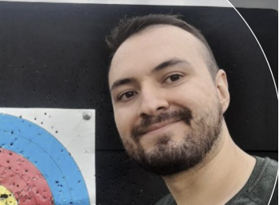

 |
Johan Esteban Restrepo RamirezCelular: +57 314 814 6607 Perfil: Ingeniero de sistemas e informatica Ciudad: Medellín GitHub: /JohanRestrepo Descargar en PDF |
Soy ingeniero de sistemas e informatica graduado de la universidad nacional de colombia en el 2018.
Mi primer oportundiad laboral surgio en EAFIT cuando me presente como prestador de servicios, les gusto como trabajaba y me dejaron fijo, pese a que mi trabajo principal no era de programacion en algunos proyectos ocasionales o en mi tiempo libre segui investigando y programando.
Con el tiempo me han surgido muchas oportunidades pero mi objetivo actual es enfocarme totalemnte en la programacion, ser parte de un equipo que me permita aprender y mejorar mi perfil, mi meta mas proxima es mejorar mis habilidades en el back con java y Springboot
En mi tiempo libre me gusta manejar mi moto y conocer espacio cerca de medellin que sean interesantes y que se relaciones con un viaje divertido y experiencias inolvidables, ademas de que me gusta practicar tiro con arco con la meta de llegar a dispar a blancos de mas de 50 mtrs.